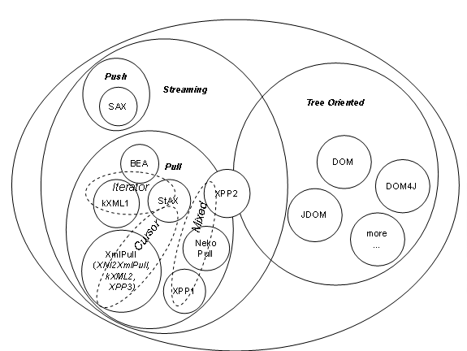

<html xmlns:v="urn:schemas-microsoft-com:vml"
xmlns:o="urn:schemas-microsoft-com:office:office"
xmlns:w="urn:schemas-microsoft-com:office:word"
xmlns:st1="urn:schemas-microsoft-com:office:smarttags"
xmlns="http://www.w3.org/TR/REC-html40">

<head>
<meta http-equiv=Content-Type content="text/html; charset=windows-1252">
<link rel=Original-File href="file:///C:\Forge\xmlpull-website\history\PullParsing.doc">
<meta name=ProgId content=Word.Document>
<meta name=Generator content="Microsoft Word 10">
<meta name=Originator content="Microsoft Word 10">
<link rel=File-List href="PullParsing_files/filelist.xml">
<link rel=Edit-Time-Data href="PullParsing_files/editdata.mso">
<!--[if !mso]>
<style>
v\:* {behavior:url(#default#VML);}
o\:* {behavior:url(#default#VML);}
w\:* {behavior:url(#default#VML);}
.shape {behavior:url(#default#VML);}
</style>
<![endif]--><o:SmartTagType
 namespaceuri="urn:schemas-microsoft-com:office:smarttags" name="Street"/>
<o:SmartTagType namespaceuri="urn:schemas-microsoft-com:office:smarttags"
 name="address"/>
<o:SmartTagType namespaceuri="urn:schemas-microsoft-com:office:smarttags"
 name="PlaceType"/>
<o:SmartTagType namespaceuri="urn:schemas-microsoft-com:office:smarttags"
 name="PlaceName"/>
<o:SmartTagType namespaceuri="urn:schemas-microsoft-com:office:smarttags"
 name="place"/>
<o:SmartTagType namespaceuri="urn:schemas-microsoft-com:office:smarttags"
 name="stockticker"/>
<!--[if gte mso 9]><xml>
 <o:DocumentProperties>
  <o:Author>Aleksander Slominski</o:Author>
  <o:LastAuthor>Aleksander Slominski</o:LastAuthor>
  <o:Revision>107</o:Revision>
  <o:TotalTime>774</o:TotalTime>
  <o:Created>2004-03-13T04:58:00Z</o:Created>
  <o:LastSaved>2004-12-31T20:16:00Z</o:LastSaved>
  <o:Pages>1</o:Pages>
  <o:Words>2617</o:Words>
  <o:Characters>14920</o:Characters>
  <o:Company>Indiana University</o:Company>
  <o:Lines>124</o:Lines>
  <o:Paragraphs>35</o:Paragraphs>
  <o:CharactersWithSpaces>17502</o:CharactersWithSpaces>
  <o:Version>10.4219</o:Version>
 </o:DocumentProperties>
</xml><![endif]--><!--[if gte mso 9]><xml>
 <w:WordDocument>
  <w:View>Print</w:View>
  <w:Zoom>BestFit</w:Zoom>
  <w:SpellingState>Clean</w:SpellingState>
  <w:GrammarState>Clean</w:GrammarState>
  <w:Compatibility>
   <w:BreakWrappedTables/>
   <w:SnapToGridInCell/>
   <w:WrapTextWithPunct/>
   <w:UseAsianBreakRules/>
  </w:Compatibility>
  <w:BrowserLevel>MicrosoftInternetExplorer4</w:BrowserLevel>
 </w:WordDocument>
</xml><![endif]--><!--[if !mso]><object
 classid="clsid:38481807-CA0E-42D2-BF39-B33AF135CC4D" id=ieooui></object>
<style>
st1\:*{behavior:url(#ieooui) }
</style>
<![endif]-->
<style>
<!--
 /* Font Definitions */
 @font-face
	{font-family:Wingdings;
	panose-1:5 0 0 0 0 0 0 0 0 0;
	mso-font-charset:2;
	mso-generic-font-family:auto;
	mso-font-pitch:variable;
	mso-font-signature:0 268435456 0 0 -2147483648 0;}
 /* Style Definitions */
 p.MsoNormal, li.MsoNormal, div.MsoNormal
	{mso-style-parent:"";
	margin:0in;
	margin-bottom:.0001pt;
	mso-pagination:widow-orphan;
	font-size:12.0pt;
	font-family:"Times New Roman";
	mso-fareast-font-family:"Times New Roman";
	mso-ansi-language:EN-GB;}
h1
	{mso-style-link:" Char";
	mso-style-next:Normal;
	margin-top:12.0pt;
	margin-right:0in;
	margin-bottom:3.0pt;
	margin-left:0in;
	mso-pagination:widow-orphan;
	page-break-after:avoid;
	mso-outline-level:1;
	font-size:16.0pt;
	font-family:Arial;
	mso-font-kerning:16.0pt;
	mso-ansi-language:EN-GB;}
h2
	{mso-style-next:Normal;
	margin-top:12.0pt;
	margin-right:0in;
	margin-bottom:3.0pt;
	margin-left:0in;
	mso-pagination:widow-orphan;
	page-break-after:avoid;
	mso-outline-level:2;
	font-size:14.0pt;
	font-family:Arial;
	mso-ansi-language:EN-GB;
	font-style:italic;}
p.MsoBodyText, li.MsoBodyText, div.MsoBodyText
	{margin-top:0in;
	margin-right:0in;
	margin-bottom:6.0pt;
	margin-left:0in;
	mso-pagination:widow-orphan;
	font-size:12.0pt;
	mso-bidi-font-size:10.0pt;
	font-family:"Times New Roman";
	mso-fareast-font-family:"Times New Roman";}
a:link, span.MsoHyperlink
	{color:blue;
	text-decoration:underline;
	text-underline:single;}
a:visited, span.MsoHyperlinkFollowed
	{color:purple;
	text-decoration:underline;
	text-underline:single;}
code
	{font-family:"Courier New";
	mso-ascii-font-family:"Courier New";
	mso-fareast-font-family:"Times New Roman";
	mso-hansi-font-family:"Courier New";
	mso-bidi-font-family:"Courier New";}
pre
	{margin:0in;
	margin-bottom:.0001pt;
	mso-pagination:widow-orphan;
	tab-stops:.5in;
	font-size:8.0pt;
	font-family:"Courier New";
	mso-fareast-font-family:"Times New Roman";
	mso-ansi-language:EN-GB;
	mso-no-proof:yes;}
samp
	{font-family:"Courier New";
	mso-ascii-font-family:"Courier New";
	mso-fareast-font-family:"Times New Roman";
	mso-hansi-font-family:"Courier New";
	mso-bidi-font-family:"Courier New";}
span.Char
	{mso-style-name:" Char";
	mso-style-link:"Heading 1";
	mso-ansi-font-size:16.0pt;
	mso-bidi-font-size:16.0pt;
	font-family:Arial;
	mso-ascii-font-family:Arial;
	mso-hansi-font-family:Arial;
	mso-bidi-font-family:Arial;
	mso-font-kerning:16.0pt;
	mso-ansi-language:EN-GB;
	mso-fareast-language:EN-US;
	mso-bidi-language:AR-SA;
	font-weight:bold;}
span.CharChar1
	{mso-style-name:" Char Char1";
	mso-ansi-font-size:16.0pt;
	mso-bidi-font-size:16.0pt;
	font-family:Arial;
	mso-ascii-font-family:Arial;
	mso-hansi-font-family:Arial;
	mso-bidi-font-family:Arial;
	mso-font-kerning:16.0pt;
	mso-ansi-language:EN-GB;
	mso-fareast-language:EN-US;
	mso-bidi-language:AR-SA;
	font-weight:bold;}
span.SpellE
	{mso-style-name:"";
	mso-spl-e:yes;}
span.GramE
	{mso-style-name:"";
	mso-gram-e:yes;}
@page Section1
	{size:8.5in 11.0in;
	margin:1.0in 1.25in 1.0in 1.25in;
	mso-header-margin:.5in;
	mso-footer-margin:.5in;
	mso-paper-source:0;}
div.Section1
	{page:Section1;}
 /* List Definitions */
 @list l0
	{mso-list-id:-132;
	mso-list-type:simple;
	mso-list-template-ids:1232521906;}
@list l0:level1
	{mso-level-tab-stop:1.25in;
	mso-level-number-position:left;
	margin-left:1.25in;
	text-indent:-.25in;}
@list l1
	{mso-list-id:-131;
	mso-list-type:simple;
	mso-list-template-ids:1468178222;}
@list l1:level1
	{mso-level-tab-stop:1.0in;
	mso-level-number-position:left;
	margin-left:1.0in;
	text-indent:-.25in;}
@list l2
	{mso-list-id:-130;
	mso-list-type:simple;
	mso-list-template-ids:1464234226;}
@list l2:level1
	{mso-level-tab-stop:.75in;
	mso-level-number-position:left;
	margin-left:.75in;
	text-indent:-.25in;}
@list l3
	{mso-list-id:-129;
	mso-list-type:simple;
	mso-list-template-ids:-1214326268;}
@list l3:level1
	{mso-level-tab-stop:.5in;
	mso-level-number-position:left;
	text-indent:-.25in;}
@list l4
	{mso-list-id:-128;
	mso-list-type:simple;
	mso-list-template-ids:262821910;}
@list l4:level1
	{mso-level-number-format:bullet;
	mso-level-text:\F0B7;
	mso-level-tab-stop:1.25in;
	mso-level-number-position:left;
	margin-left:1.25in;
	text-indent:-.25in;
	font-family:Symbol;}
@list l5
	{mso-list-id:-127;
	mso-list-type:simple;
	mso-list-template-ids:-1107792734;}
@list l5:level1
	{mso-level-number-format:bullet;
	mso-level-text:\F0B7;
	mso-level-tab-stop:1.0in;
	mso-level-number-position:left;
	margin-left:1.0in;
	text-indent:-.25in;
	font-family:Symbol;}
@list l6
	{mso-list-id:-126;
	mso-list-type:simple;
	mso-list-template-ids:232676624;}
@list l6:level1
	{mso-level-number-format:bullet;
	mso-level-text:\F0B7;
	mso-level-tab-stop:.75in;
	mso-level-number-position:left;
	margin-left:.75in;
	text-indent:-.25in;
	font-family:Symbol;}
@list l7
	{mso-list-id:-125;
	mso-list-type:simple;
	mso-list-template-ids:829180048;}
@list l7:level1
	{mso-level-number-format:bullet;
	mso-level-text:\F0B7;
	mso-level-tab-stop:.5in;
	mso-level-number-position:left;
	text-indent:-.25in;
	font-family:Symbol;}
@list l8
	{mso-list-id:-120;
	mso-list-type:simple;
	mso-list-template-ids:-1321944398;}
@list l8:level1
	{mso-level-tab-stop:.25in;
	mso-level-number-position:left;
	margin-left:.25in;
	text-indent:-.25in;}
@list l9
	{mso-list-id:-119;
	mso-list-type:simple;
	mso-list-template-ids:-332602590;}
@list l9:level1
	{mso-level-number-format:bullet;
	mso-level-text:\F0B7;
	mso-level-tab-stop:.25in;
	mso-level-number-position:left;
	margin-left:.25in;
	text-indent:-.25in;
	font-family:Symbol;}
@list l10
	{mso-list-id:655955182;
	mso-list-type:hybrid;
	mso-list-template-ids:635473876 67698689 67698691 67698693 67698689 67698691 67698693 67698689 67698691 67698693;}
@list l10:level1
	{mso-level-number-format:bullet;
	mso-level-text:\F0B7;
	mso-level-tab-stop:.5in;
	mso-level-number-position:left;
	text-indent:-.25in;
	font-family:Symbol;}
@list l11
	{mso-list-id:920412669;
	mso-list-type:hybrid;
	mso-list-template-ids:-128148926 67698689 67698691 67698693 67698689 67698691 67698693 67698689 67698691 67698693;}
@list l11:level1
	{mso-level-number-format:bullet;
	mso-level-text:\F0B7;
	mso-level-tab-stop:.5in;
	mso-level-number-position:left;
	text-indent:-.25in;
	font-family:Symbol;}
ol
	{margin-bottom:0in;}
ul
	{margin-bottom:0in;}
-->
</style>
<!--[if gte mso 10]>
<style>
 /* Style Definitions */
 table.MsoNormalTable
	{mso-style-name:"Table Normal";
	mso-tstyle-rowband-size:0;
	mso-tstyle-colband-size:0;
	mso-style-noshow:yes;
	mso-style-parent:"";
	mso-padding-alt:0in 5.4pt 0in 5.4pt;
	mso-para-margin:0in;
	mso-para-margin-bottom:.0001pt;
	mso-pagination:widow-orphan;
	font-size:10.0pt;
	font-family:"Times New Roman";}
</style>
<![endif]--><!--[if gte mso 9]><xml>
 <o:shapedefaults v:ext="edit" spidmax="2050"/>
</xml><![endif]--><!--[if gte mso 9]><xml>
 <o:shapelayout v:ext="edit">
  <o:idmap v:ext="edit" data="1"/>
 </o:shapelayout></xml><![endif]-->
</head>

<body lang=EN-US link=blue vlink=purple style='tab-interval:.5in'>

<div class=Section1>

<h1 align=center style='text-align:center'><span style='mso-ansi-language:EN-US'>On
Using XML Pull Parsing Java APIs<o:p></o:p></span></h1>

<p class=MsoNormal><span style='mso-ansi-language:EN-US'><o:p>&nbsp;</o:p></span></p>

<p class=MsoNormal><span style='mso-ansi-language:EN-US'><o:p>&nbsp;</o:p></span></p>

<p class=MsoNormal align=center style='text-align:center'><span
style='mso-ansi-language:EN-US'>15 March 2004<o:p></o:p></span></p>

<p class=MsoNormal align=center style='text-align:center'><span
style='mso-ansi-language:EN-US'><o:p>&nbsp;</o:p></span></p>

<p class=MsoNormal align=center style='text-align:center'><span
style='mso-ansi-language:EN-US'>Aleksander Slomiski<o:p></o:p></span></p>

<p class=MsoNormal align=center style='text-align:center'><span
style='mso-ansi-language:EN-US'>Department of Computer Science<o:p></o:p></span></p>

<p class=MsoNormal align=center style='text-align:center'><st1:place><st1:PlaceName><span
  style='mso-ansi-language:EN-US'>Indiana</span></st1:PlaceName><span
 style='mso-ansi-language:EN-US'> </span><st1:PlaceType><span style='mso-ansi-language:
  EN-US'>University</span></st1:PlaceType></st1:place><span style='mso-ansi-language:
EN-US'><o:p></o:p></span></p>

<p class=MsoNormal align=center style='text-align:center'><span
style='mso-ansi-language:EN-US'>www.extreme.indiana.edu<o:p></o:p></span></p>

<p class=MsoNormal><span style='mso-ansi-language:EN-US'><o:p>&nbsp;</o:p></span></p>

<p class=MsoNormal><span style='mso-ansi-language:EN-US'><o:p>&nbsp;</o:p></span></p>

<h1><span style='mso-ansi-language:EN-US'>Abstract<o:p></o:p></span></h1>

<p class=MsoBodyText>This paper provides an overview of XML Pull Parsing Java APIs.
We first briefly describe how pull parsing is different from other approaches.
Then we introduce and guide through myriad of existing APIs: BEA, kXML1, NekoPull,
XNI2XmlPull, XPP1, XPP2, kXML2, XPP3, and JSR-173 StAX and compare them.
Finally we look on performance implications of APIs design and future
directions.<o:p></o:p></p>

<p class=MsoNormal><span style='mso-ansi-language:EN-US'><o:p>&nbsp;</o:p></span></p>

<p class=MsoNormal><span class=CharChar1><span style='font-size:16.0pt;
mso-ansi-language:EN-US'>Introduction</span></span><span style='mso-ansi-language:
EN-US'> </span><b><span style='font-size:16.0pt;font-family:Arial;mso-font-kerning:
16.0pt;mso-ansi-language:EN-US'><o:p></o:p></span></b></p>

<p class=MsoNormal><span style='mso-ansi-language:EN-US'><o:p>&nbsp;</o:p></span></p>

<p class=MsoNormal><span style='mso-ansi-language:EN-US'>XML Pull Parsing is
touted as a high performance alternative to DOM for XML parsing that is easier
to use than SAX. SAX is push API and enjoys wide spread adoption virtually
removing any other push API in Java. This is not the case for pull parsing
where many APIs were created and only recently JSR 172 StAX (Streaming API for
XML) promises to provide one standard. However even if StAX will become the API
for pull parsing it is important to understand choices made in API, especially
dual nature of StAX API. Additionally when choosing XML processing API between
tree oriented (such as DOM), streaming push (SAX) and pull (StAX) it is crucial
to understand limitations of each approach and in particular trade-off between
easiness of use and memory utilization/performance.<o:p></o:p></span></p>

<p class=MsoNormal><span style='mso-ansi-language:EN-US'><o:p>&nbsp;</o:p></span></p>

<p class=MsoNormal><span style='mso-ansi-language:EN-US'>We will use a simple
example task to compare APIs. We have some data - a simple <span class=GramE>set
<span style='mso-spacerun:yes'> </span>of</span> records – address book
containing list of persons, each represented as XML. Each record has following
structure (name is required, <span class=SpellE>home_address</span> and <span
class=SpellE>work_address</span> are optional):<o:p></o:p></span></p>

<p class=MsoNormal><span style='mso-ansi-language:EN-US'><o:p>&nbsp;</o:p></span></p>

<pre><span style='mso-ansi-language:EN-US'>&lt;person&gt;<o:p></o:p></span></pre><pre><span
style='mso-ansi-language:EN-US'>&lt;name&gt;Joe Doe&lt;/name&gt;<o:p></o:p></span></pre><pre><span
style='mso-ansi-language:EN-US'>&lt;home_address&gt;<o:p></o:p></span></pre><pre><span
style='mso-ansi-language:EN-US'>&lt;street&gt;101 Sweet Home&lt;/street&gt;<o:p></o:p></span></pre><pre><span
style='mso-ansi-language:EN-US'>&lt;phone&gt;333-3333&lt;/phone&gt;<o:p></o:p></span></pre><pre><span
style='mso-ansi-language:EN-US'>&lt;/home_address&gt;<o:p></o:p></span></pre><pre><span
style='mso-ansi-language:EN-US'>&lt;work_address&gt;<o:p></o:p></span></pre><pre><span
style='mso-ansi-language:EN-US'>&lt;street&gt;</span><st1:Street><st1:address><span
  style='mso-ansi-language:EN-US'>303 Office Street</span></st1:address></st1:Street><span
style='mso-ansi-language:EN-US'>&lt;/street&gt;<o:p></o:p></span></pre><pre><span
style='mso-ansi-language:EN-US'>&lt;phone&gt;444-4444&lt;/phone&gt;<o:p></o:p></span></pre><pre><span
style='mso-ansi-language:EN-US'>&lt;/work_address&gt;<o:p></o:p></span></pre><pre><span
style='mso-ansi-language:EN-US'>&lt;/person&gt;<o:p></o:p></span></pre>

<p class=MsoNormal><span style='mso-ansi-language:EN-US'><o:p>&nbsp;</o:p></span></p>

<p class=MsoNormal><span style='mso-ansi-language:EN-US'>In this example we
want to read XML in streaming manner and extract information into Java specific
data types, for example:<o:p></o:p></span></p>

<p class=MsoNormal><span style='mso-ansi-language:EN-US'><o:p>&nbsp;</o:p></span></p>

<pre><span style='mso-ansi-language:EN-US'>class Person {<o:p></o:p></span></pre><pre><span
style='mso-ansi-language:EN-US'><span style='mso-spacerun:yes'>        </span>String name;<o:p></o:p></span></pre><pre><span
style='mso-ansi-language:EN-US'><span style='mso-spacerun:yes'>        </span>Address homeAddress;<o:p></o:p></span></pre><pre><span
style='mso-ansi-language:EN-US'><span style='mso-spacerun:yes'>        </span>Address workAddress;<o:p></o:p></span></pre><pre><span
style='mso-ansi-language:EN-US'>}<o:p></o:p></span></pre><pre><span
style='mso-ansi-language:EN-US'><o:p>&nbsp;</o:p></span></pre><pre><span
style='mso-ansi-language:EN-US'>class Address {<o:p></o:p></span></pre><pre><span
style='mso-ansi-language:EN-US'><span style='mso-spacerun:yes'>        </span>String street;<o:p></o:p></span></pre><pre><span
style='mso-ansi-language:EN-US'><span style='mso-spacerun:yes'>        </span>String phone;<o:p></o:p></span></pre><pre><span
style='mso-ansi-language:EN-US'>}<o:p></o:p></span></pre>

<p class=MsoNormal><span style='mso-ansi-language:EN-US'><o:p>&nbsp;</o:p></span></p>

<p class=MsoNormal><span style='mso-ansi-language:EN-US'><o:p>&nbsp;</o:p></span></p>

<p class=MsoNormal><span style='mso-ansi-language:EN-US'><o:p>&nbsp;</o:p></span></p>

<p class=MsoNormal><span style='mso-ansi-language:EN-US'>There is also related
work in C [libxml], C++ and C# but in this paper we will concentrate only on
Java APIs.<o:p></o:p></span></p>

<p class=MsoNormal><span style='mso-ansi-language:EN-US'><o:p>&nbsp;</o:p></span></p>

<h1><span style='mso-ansi-language:EN-US'>Push based APIs<o:p></o:p></span></h1>

<p class=MsoNormal><span style='mso-ansi-language:EN-US'>Before we go into
description of pull based APIs first let take a look on the only streaming
alternative to pulling: push. In type of APIs parser reads XML and notifies
application about interesting event by calling set of methods (or passing
events). The application has no control to request events instead they are
passed by parser when available.<span style='mso-spacerun:yes'>  </span><o:p></o:p></span></p>

<p class=MsoNormal><span style='mso-ansi-language:EN-US'>The most popular push
based API is The Simple API for XML [SAX2].<o:p></o:p></span></p>

<p class=MsoNormal><span style='mso-ansi-language:EN-US'>Unfortunately the API
is not simple to work (this is majority opinion some developers may find
required state machines and dealing with stacks of handlers easy and natural) with
deeply nested XML structures. As an example see SAX code in appendix [A.SAX1] to
parse the example XML that will not be able to detect incorrect input:<o:p></o:p></span></p>

<p class=MsoNormal><span style='mso-ansi-language:EN-US'>The sample code looks
simple but unfortunately is incorrect as it will happily accept XML input that
does not follow our example structure. For example:<o:p></o:p></span></p>

<p class=MsoNormal><span style='mso-ansi-language:EN-US'><o:p>&nbsp;</o:p></span></p>

<pre><span style='mso-ansi-language:EN-US'>&lt;person&gt;<o:p></o:p></span></pre><pre><span
style='mso-ansi-language:EN-US'>&lt;name&gt;Joe&lt;/name&gt;<o:p></o:p></span></pre><pre><span
style='mso-ansi-language:EN-US'>&lt;home_address&gt;<o:p></o:p></span></pre><pre><span
style='mso-ansi-language:EN-US'>&lt;phone&gt;333-3333&lt;/phone&gt;<o:p></o:p></span></pre><pre><span
style='mso-ansi-language:EN-US'>&lt;/home_address&gt;<o:p></o:p></span></pre><pre><span
style='mso-ansi-language:EN-US'>&lt;phone&gt;666-6666&lt;/phone&gt;<o:p></o:p></span></pre><pre><span
style='mso-ansi-language:EN-US'>&lt;/person&gt;<o:p></o:p></span></pre>

<p class=MsoNormal><span style='mso-ansi-language:EN-US'><o:p>&nbsp;</o:p></span></p>

<p class=MsoNormal><span style='mso-ansi-language:EN-US'>The last phone element
is in incorrect position but it will be not detected and even worse it will
override correct home address phone value.<o:p></o:p></span></p>

<p class=MsoNormal><span style='mso-ansi-language:EN-US'>The solution is to add
state variables that will be maintained between pushed events however that
requires more complicated code or more sophisticated approach with nested SAX
handlers (we will not explore it here). [TODO: reference articles describing
those techniques]<o:p></o:p></span></p>

<p class=MsoNormal><span style='mso-ansi-language:EN-US'><o:p>&nbsp;</o:p></span></p>

<h1><span style='mso-ansi-language:EN-US'>Pull based APIs<o:p></o:p></span></h1>

<p class=MsoNormal><span style='mso-ansi-language:EN-US'>With pull API the
application is in control and requires next XML event from the parser when it
is ready to process it. That means that structure of code that is doing parsing
<i style='mso-bidi-font-style:normal'>reflects</i> structure of XML documents.
This is fundamental pattern visible in all applications using pull based APIs
and leads to easier to understand code. We have described this pattern and
similar XML pull parsing patterns [PullPatterns] and encourage reader to review
them as they help to write cleaner and easier to maintain code that uses any
pull parsing API. <o:p></o:p></span></p>

<p class=MsoNormal><span style='mso-ansi-language:EN-US'>As the application maintains
control over parsing therefore the parser instance must be made available to
all places in code that need to access XML. Typical pull parsing application instantiates
parser and then call a method that corresponds to outermost structure of XML,
here in pseudo-code:<o:p></o:p></span></p>

<p class=MsoNormal><span style='font-size:8.0pt;mso-ansi-language:EN-US'><o:p>&nbsp;</o:p></span></p>

<pre><span style='mso-ansi-language:EN-US'><span style='mso-spacerun:yes'>        </span>parser = new PullParser(input)<o:p></o:p></span></pre><pre><span
style='mso-ansi-language:EN-US'><span style='mso-spacerun:yes'>        </span>Person person = parsePerson(parser);<o:p></o:p></span></pre>

<p class=MsoNormal><span style='mso-ansi-language:EN-US'><o:p>&nbsp;</o:p></span></p>

<p class=MsoNormal><span style='mso-ansi-language:EN-US'>The <span
class=SpellE><span class=GramE>parsePerson</span></span><span class=GramE>(</span>)
method needs to follow expected XML structure: <o:p></o:p></span></p>

<ul style='margin-top:0in' type=disc>
 <li class=MsoNormal style='mso-list:l11 level1 lfo4;tab-stops:list .5in'><span
     style='mso-ansi-language:EN-US'>Only XML elements are allowed as content
     of &lt;person&gt; (<span class=SpellE>nextTag</span>() does this check)<o:p></o:p></span></li>
 <li class=MsoNormal style='mso-list:l11 level1 lfo4;tab-stops:list .5in'><span
     style='mso-ansi-language:EN-US'>Name is required field with text only
     content (<span class=SpellE>nextText</span>()) and must happen exactly
     once (the check at the end of the method)<o:p></o:p></span></li>
 <li class=MsoNormal style='mso-list:l11 level1 lfo4;tab-stops:list .5in'><span
     style='mso-ansi-language:EN-US'>Home address and work address are optional
     but they can happen at most one time (the check before calling <span
     class=SpellE>readAddress</span>())<o:p></o:p></span></li>
 <li class=MsoNormal style='mso-list:l11 level1 lfo4;tab-stops:list .5in'><span
     style='mso-ansi-language:EN-US'>Any other XML element or non white space
     content is not allowed<o:p></o:p></span></li>
</ul>

<p class=MsoNormal><span style='mso-ansi-language:EN-US'><o:p>&nbsp;</o:p></span></p>

<pre><span style='mso-ansi-language:EN-US'><span style='mso-spacerun:yes'>        </span>public Person parsePerson(XmlPullParser parser) <o:p></o:p></span></pre><pre><span
style='mso-ansi-language:EN-US'><span style='mso-spacerun:yes'>   </span><span style='mso-spacerun:yes'>      </span>throws ValidationException, XmlPullParserException <o:p></o:p></span></pre><pre><span
style='mso-ansi-language:EN-US'><span style='mso-spacerun:yes'>        </span>{<o:p></o:p></span></pre><pre><span
style='mso-ansi-language:EN-US'><span style='mso-spacerun:yes'>                </span>Person person = new Person();<o:p></o:p></span></pre><pre><span
style='mso-ansi-language:EN-US'><span style='mso-spacerun:yes'>                </span>while(true) {<o:p></o:p></span></pre><pre><span
style='mso-ansi-language:EN-US'><span style='mso-spacerun:yes'>                   </span>int eventType = parser.nextTag();<o:p></o:p></span></pre><pre><span
style='mso-ansi-language:EN-US'><span style='mso-spacerun:yes'>                   </span>if(eventType == XmlPullParser.START_</span><st1:stockticker><span
 style='mso-ansi-language:EN-US'>TAG</span></st1:stockticker><span
style='mso-ansi-language:EN-US'>) {<o:p></o:p></span></pre><pre><span
style='mso-ansi-language:EN-US'><span style='mso-spacerun:yes'>                      </span>String tag = parser.getStartTagName();<o:p></o:p></span></pre><pre><span
style='mso-ansi-language:EN-US'><span style='mso-spacerun:yes'>                      </span>if(&quot;name&quot;.equals(tag)) {<o:p></o:p></span></pre><pre><span
style='mso-ansi-language:EN-US'><span style='mso-spacerun:yes'>                        </span>if(person.name != null) {<o:p></o:p></span></pre><pre><span
style='mso-ansi-language:EN-US'><span style='mso-spacerun:yes'>                          </span>throw new ValidationException(<o:p></o:p></span></pre><pre><span
style='mso-ansi-language:EN-US'><span style='mso-spacerun:yes'>                            </span>&quot;only one person name is allowed &quot;);<o:p></o:p></span></pre><pre><span
style='mso-ansi-language:EN-US'><span style='mso-spacerun:yes'>                        </span>}<o:p></o:p></span></pre><pre><span
style='mso-ansi-language:EN-US'><span style='mso-spacerun:yes'>                        </span>person.name = parser.nextText();<span style='mso-spacerun:yes'>                </span><o:p></o:p></span></pre><pre><span
style='mso-ansi-language:EN-US'><span style='mso-spacerun:yes'>               </span><span style='mso-spacerun:yes'>       </span>} else if(&quot;home_address&quot;.equals(tag)) {<o:p></o:p></span></pre><pre><span
style='mso-ansi-language:EN-US'><span style='mso-spacerun:yes'>                        </span>if(person.homeAddress != null) {<o:p></o:p></span></pre><pre><span
style='mso-ansi-language:EN-US'><span style='mso-spacerun:yes'>           </span><span style='mso-spacerun:yes'>               </span>throw new ValidationException(<o:p></o:p></span></pre><pre><span
style='mso-ansi-language:EN-US'><span style='mso-spacerun:yes'>                            </span>&quot;only one home address is allowed &quot;);<o:p></o:p></span></pre><pre><span
style='mso-ansi-language:EN-US'><span style='mso-spacerun:yes'>                        </span>}<o:p></o:p></span></pre><pre><span
style='mso-ansi-language:EN-US'><span style='mso-spacerun:yes'>                 </span><span style='mso-spacerun:yes'>       </span>person.homeAddress = <b
style='mso-bidi-font-weight:normal'>parseAddress</b>(parser);<o:p></o:p></span></pre><pre><span
style='mso-ansi-language:EN-US'><span style='mso-spacerun:yes'>               </span><span style='mso-spacerun:yes'>       </span>} else if(&quot;work_address&quot;.equals(tag)) {<o:p></o:p></span></pre><pre><span
style='mso-ansi-language:EN-US'><span style='mso-spacerun:yes'>                        </span>if(person.workAddress != null) {<o:p></o:p></span></pre><pre><span
style='mso-ansi-language:EN-US'><span style='mso-spacerun:yes'>                          </span>throw new ValidationException(<o:p></o:p></span></pre><pre><span
style='mso-ansi-language:EN-US'><span style='mso-spacerun:yes'>                            </span>&quot;only one work address is allowed &quot;);<o:p></o:p></span></pre><pre><span
style='mso-ansi-language:EN-US'><span style='mso-spacerun:yes'>                        </span>}<o:p></o:p></span></pre><pre><span
style='mso-ansi-language:EN-US'><span style='mso-spacerun:yes'>                        </span>person.workAddress = <b
style='mso-bidi-font-weight:normal'>parseAddress</b>(parser);<o:p></o:p></span></pre><pre><span
style='mso-ansi-language:EN-US'><span style='mso-spacerun:yes'>                      </span>} else {<o:p></o:p></span></pre><pre><span
style='mso-ansi-language:EN-US'><span style='mso-spacerun:yes'>                        </span>throw new ValidationException(<o:p></o:p></span></pre><pre><span
style='mso-ansi-language:EN-US'><span style='mso-spacerun:yes'>                          </span>&quot;unknown field &quot;+tag+&quot; in person record&quot;);<o:p></o:p></span></pre><pre><span
style='mso-ansi-language:EN-US'><span style='mso-spacerun:yes'>                      </span>}<o:p></o:p></span></pre><pre><span
style='mso-ansi-language:EN-US'><span style='mso-spacerun:yes'>                   </span>} else if(eventType == XmlPullParser.END_</span><st1:stockticker><span
 style='mso-ansi-language:EN-US'>TAG</span></st1:stockticker><span
style='mso-ansi-language:EN-US'>) {<o:p></o:p></span></pre><pre><span
style='mso-ansi-language:EN-US'><span style='mso-spacerun:yes'>                     </span>break;<o:p></o:p></span></pre><pre><span
style='mso-ansi-language:EN-US'><span style='mso-spacerun:yes'>                   </span>}<o:p></o:p></span></pre><pre><span
style='mso-ansi-language:EN-US'><span style='mso-spacerun:yes'>                </span>}<o:p></o:p></span></pre><pre><span
style='mso-ansi-language:EN-US'><span style='mso-spacerun:yes'>                </span>if(person.name == null) {<o:p></o:p></span></pre><pre><span
style='mso-ansi-language:EN-US'><span style='mso-spacerun:yes'>                  </span>throw new ValidationException(<o:p></o:p></span></pre><pre><span
style='mso-ansi-language:EN-US'><span style='mso-spacerun:yes'>                       </span>&quot;person name is required&quot;);<o:p></o:p></span></pre><pre><span
style='mso-ansi-language:EN-US'><span style='mso-spacerun:yes'>                </span>}<o:p></o:p></span></pre><pre><span
style='mso-ansi-language:EN-US'><span style='mso-spacerun:yes'>           </span><span style='mso-spacerun:yes'>     </span>return person;<o:p></o:p></span></pre><pre><span
style='mso-ansi-language:EN-US'><span style='mso-spacerun:yes'>        </span>}<o:p></o:p></span></pre>

<p class=MsoNormal><span style='mso-ansi-language:EN-US'><o:p>&nbsp;</o:p></span></p>

<p class=MsoNormal><span style='mso-ansi-language:EN-US'>What is important to
notice about this code is that parsing of home or work address is delegated to
another method (so code is modular) and that method is shared as structure of
both work address and home address is identical.<o:p></o:p></span></p>

<p class=MsoNormal><span style='mso-ansi-language:EN-US'><o:p>&nbsp;</o:p></span></p>

<pre><span style='mso-ansi-language:EN-US'><span style='mso-spacerun:yes'>        </span>public Address parseAddress(XmlPullParser parser) <br>
<span style='mso-spacerun:yes'>          </span>throws ValidationException, XmlPullParserException <o:p></o:p></span></pre><pre><span
style='mso-ansi-language:EN-US'><span style='mso-spacerun:yes'>        </span>{<o:p></o:p></span></pre><pre><span
style='mso-ansi-language:EN-US'><span style='mso-spacerun:yes'>                </span>Address address = new Address();<o:p></o:p></span></pre><pre><span
style='mso-ansi-language:EN-US'><span style='mso-spacerun:yes'>                </span>while(true) {<o:p></o:p></span></pre><pre><span
style='mso-ansi-language:EN-US'><span style='mso-spacerun:yes'>                   </span>int eventTyppe = parser.nextTag();<o:p></o:p></span></pre><pre><span
style='mso-ansi-language:EN-US'><span style='mso-spacerun:yes'>                   </span>if(eventType = XmlPullParser.START_</span><st1:stockticker><span
 style='mso-ansi-language:EN-US'>TAG</span></st1:stockticker><span
style='mso-ansi-language:EN-US'>) {<o:p></o:p></span></pre><pre><span
style='mso-ansi-language:EN-US'><span style='mso-spacerun:yes'>                      </span>String tag = XmlPullParser.getStartTagName();<o:p></o:p></span></pre><pre><span
style='mso-ansi-language:EN-US'><span style='mso-spacerun:yes'>  </span><span style='mso-spacerun:yes'>                    </span>if(&quot;street&quot;.equals(tag)) {<o:p></o:p></span></pre><pre><span
style='mso-ansi-language:EN-US'><span style='mso-spacerun:yes'>                        </span>address.street = parser.nextText();<span style='mso-spacerun:yes'>        </span><span style='mso-spacerun:yes'>        </span><o:p></o:p></span></pre><pre><span
style='mso-ansi-language:EN-US'><span style='mso-spacerun:yes'>        </span><span style='mso-spacerun:yes'>              </span>} else if(&quot;phone&quot;.equals(tag)) {<o:p></o:p></span></pre><pre><span
style='mso-ansi-language:EN-US'><span style='mso-spacerun:yes'>                        </span>address.phone = parser.nextText();<span style='mso-spacerun:yes'>                </span><o:p></o:p></span></pre><pre><span
style='mso-ansi-language:EN-US'><span style='mso-spacerun:yes'>                      </span>} else {<o:p></o:p></span></pre><pre><span
style='mso-ansi-language:EN-US'><span style='mso-spacerun:yes'>                        </span>throw new ValidationException(<o:p></o:p></span></pre><pre><span
style='mso-ansi-language:EN-US'><span style='mso-spacerun:yes'>                          </span>&quot;unknown field &quot;+tag+&quot; in person record&quot;);<o:p></o:p></span></pre><pre><span
style='mso-ansi-language:EN-US'><span style='mso-spacerun:yes'>                      </span>}<o:p></o:p></span></pre><pre><span
style='mso-ansi-language:EN-US'><span style='mso-spacerun:yes'>                   </span>} else if(eventType == XmlPullParser.END_</span><st1:stockticker><span
 style='mso-ansi-language:EN-US'>TAG</span></st1:stockticker><span
style='mso-ansi-language:EN-US'>) {<o:p></o:p></span></pre><pre><span
style='mso-ansi-language:EN-US'><span style='mso-spacerun:yes'>                     </span>break;<o:p></o:p></span></pre><pre><span
style='mso-ansi-language:EN-US'><span style='mso-spacerun:yes'>                   </span>} else {<o:p></o:p></span></pre><pre><span
style='mso-ansi-language:EN-US'><span style='mso-spacerun:yes'>                     </span>throw new ValidationException(&quot;unexpected XML&quot;);<o:p></o:p></span></pre><pre><span
style='mso-ansi-language:EN-US'> <span style='mso-spacerun:yes'>                  </span>}<o:p></o:p></span></pre><pre><span
style='mso-ansi-language:EN-US'><span style='mso-spacerun:yes'>                </span>}<o:p></o:p></span></pre><pre><span
style='mso-ansi-language:EN-US'><span style='mso-tab-count:2'>              </span> return address;<o:p></o:p></span></pre><pre><span
style='mso-ansi-language:EN-US'><span style='mso-spacerun:yes'>        </span>}<o:p></o:p></span></pre>

<p class=MsoNormal><span style='mso-ansi-language:EN-US'><o:p>&nbsp;</o:p></span></p>

<p class=MsoNormal><span style='mso-ansi-language:EN-US'>What is important to
notice about this code is that parsing of home or work address is delegated to
another method (so code is modular) and that method is shared as structure of
both work address and home address is identical.<o:p></o:p></span></p>

<p class=MsoNormal><span style='mso-ansi-language:EN-US'><o:p>&nbsp;</o:p></span></p>

<p class=MsoNormal><span style='mso-ansi-language:EN-US'>More in-depth
comparison of how XML push and pull APIs compare and what are fundamental
features of pull approach is in technical repost “Design of a Pull and Push
Parser System for Streaming” [TR550]<o:p></o:p></span></p>

<p class=MsoNormal><span style='mso-ansi-language:EN-US'><o:p>&nbsp;</o:p></span></p>

<h1><span style='mso-ansi-language:EN-US'>Comparison of pull based APIs<o:p></o:p></span></h1>

<h2><span style='mso-ansi-language:EN-US'>kXML1<o:p></o:p></span></h2>

<p class=MsoNormal><span class=GramE><span style='mso-ansi-language:EN-US'>kXML1</span></span><span
style='mso-ansi-language:EN-US'> was designed to be easy to use and to work in
small devices. <span class=GramE>kXML1</span> represents XML event in a
straightforward method as objects (XML attributes are not separate events but
are accessible from StartElement event). However that turned out to be problem
when parsing larger XML documents as memory requirements were higher because of
many objects created which is concern for small devices that run J2ME version
of Java. <o:p></o:p></span></p>

<p class=MsoNormal><span class=GramE><span style='mso-ansi-language:EN-US'>kXML1</span></span><span
style='mso-ansi-language:EN-US'> is no longer under development and is replaced
by kXML2 and XmlPull API.<o:p></o:p></span></p>

<p class=MsoNormal><span style='mso-ansi-language:EN-US'><o:p>&nbsp;</o:p></span></p>

<p class=MsoNormal><span style='mso-ansi-language:EN-US'>Example Appendix A.kXML1<o:p></o:p></span></p>

<p class=MsoNormal><span style='mso-ansi-language:EN-US'><o:p>&nbsp;</o:p></span></p>

<h2><span style='mso-ansi-language:EN-US'>BEA <o:p></o:p></span></h2>

<p class=MsoNormal><span lang=EN-GB>WebLogic XML Streaming API</span><span
style='mso-ansi-language:EN-US'> [BEAXmlStreaming] is similar to kXML1 and is
very strongly modeled after SAX callbacks (includes event to reproduce prefix
mapping …). There is no example provided as we had no access to BEA WebLogic
7.0.<o:p></o:p></span></p>

<p class=MsoNormal><span style='mso-ansi-language:EN-US'><o:p>&nbsp;</o:p></span></p>

<h2><span style='mso-ansi-language:EN-US'>NekoPull<o:p></o:p></span></h2>

<p class=MsoNormal><span style='mso-ansi-language:EN-US'><o:p>&nbsp;</o:p></span></p>

<p class=MsoNormal><span style='mso-ansi-language:EN-US'>As Xerces2 Native
Interface (XNI) is designed around push approach. Even though there is pull
configuration [XniPull] that allows parsing only chunk of XML after which
parser is returning control to the caller. However the chunk can contain more
than one event and events are still delivered through callbacks. Therefore NekoPull
(and XNI2XmlPull, see XmlPull below) needs to buffer those events to be able to
return exactly one event when providing pull interface on top of XNI.<o:p></o:p></span></p>

<p class=MsoNormal><span style='mso-ansi-language:EN-US'><o:p>&nbsp;</o:p></span></p>

<p class=MsoNormal><span style='mso-ansi-language:EN-US'>Example Appendix <span
class=SpellE>A.NekoPull</span><o:p></o:p></span></p>

<p class=MsoNormal><span style='mso-ansi-language:EN-US'><o:p>&nbsp;</o:p></span></p>

<h2><span style='mso-ansi-language:EN-US'>XPP1<o:p></o:p></span></h2>

<p class=MsoNormal><span style='mso-ansi-language:EN-US'>This API was created
in two layers: tokenizer and parser. Tokenizer is responsible to breaking XML
stream into set of tokens corresponding directly to productions in XML 1.0
grammar [XML]. The tokens were assembled into XML events by second layer:
parser. XPP1 was implemented both in Java and C++ with identical API. However
the API did not provide enough flexibility to use different parser engines. <o:p></o:p></span></p>

<p class=MsoNormal><span style='mso-ansi-language:EN-US'>The main distinctive
feature of XPP1 API is how it allowed reusing XML events objects. XPP1 is no
loner under development and is replaced by XPP3 and XmlPull.<o:p></o:p></span></p>

<p class=MsoNormal><span style='mso-ansi-language:EN-US'><o:p>&nbsp;</o:p></span></p>

<p class=MsoNormal><span style='mso-ansi-language:EN-US'>Example Appendix
A.XPP1<o:p></o:p></span></p>

<p class=MsoNormal><span style='mso-ansi-language:EN-US'><o:p>&nbsp;</o:p></span></p>

<h2><span style='mso-ansi-language:EN-US'>XPP2<o:p></o:p></span></h2>

<p class=MsoNormal><span style='mso-ansi-language:EN-US'>XPP2 API is refactored
XPP1 into set of interfaces that allows multiple implementations. As proof of
concept XPP2 has Xerces2 based implementation and another based on code from
XPP1. XPP2 had a unique tree API built on top of pull API that allowed to
incrementally load XML tree and provide direct access to XML stream to bypass
tree creations for selected parts of XML.<o:p></o:p></span></p>

<p class=MsoNormal><span style='mso-ansi-language:EN-US'><o:p>&nbsp;</o:p></span></p>

<p class=MsoNormal><span style='mso-ansi-language:EN-US'>XPP2 is only available
in Java. XPP2 is no loner under development and is replaced by XPP3 and
XmlPull.<o:p></o:p></span></p>

<p class=MsoNormal><span style='mso-ansi-language:EN-US'><o:p>&nbsp;</o:p></span></p>

<p class=MsoNormal><span style='mso-ansi-language:EN-US'><o:p>&nbsp;</o:p></span></p>

<p class=MsoNormal><span style='mso-ansi-language:EN-US'>Example Appendix
A.XPP2<o:p></o:p></span></p>

<p class=MsoNormal><span style='mso-ansi-language:EN-US'><o:p>&nbsp;</o:p></span></p>

<h2><span style='mso-ansi-language:EN-US'>XmlPull: kXML2, XNI2XmlPull, and XPP3<o:p></o:p></span></h2>

<p class=MsoNormal><span style='mso-ansi-language:EN-US'>Needs for very low
level API that has very small memory footprint (good for J2ME) and that can be
used as a building block for higher level APIs. In this sense XmlPull API sits
just on top of XML tokenizer and allows to expose all XML tokens; nextToken()
method is specifically designed for it and coupled with optional feature that
when implemented by XmlPull parser allow full round trip of XML.<o:p></o:p></span></p>

<p class=MsoNormal><span style='mso-ansi-language:EN-US'><o:p>&nbsp;</o:p></span></p>

<p class=MsoNormal><span style='mso-ansi-language:EN-US'>XmlPull API was
created by authors of kXML and XPP to avoid a confusion of multiple Java APIs
for pull parsing. Common features of both APIs were extracted and then
distilled into one core set of API operations that can be implemented and used
from J2ME (low memory footprint), though J2SE and J2EE environments (flexible
factory and support for selection of class loaders).<o:p></o:p></span></p>

<p class=MsoNormal><span style='mso-ansi-language:EN-US'>Additionally there is
an implementation of XmlPull on top of Xerces2. <o:p></o:p></span></p>

<p class=MsoNormal><span style='mso-ansi-language:EN-US'><o:p>&nbsp;</o:p></span></p>

<p class=MsoNormal><span style='mso-ansi-language:EN-US'>To meet requirements
of small footprint XmlPull defines only one interface to represent XML pull
parser and one exception. Additional interface is provided for writing XML
output but it is optional in J2ME to keep memory footprint low.<o:p></o:p></span></p>

<p class=MsoNormal><span style='mso-ansi-language:EN-US'><o:p>&nbsp;</o:p></span></p>

<p class=MsoNormal><span style='mso-ansi-language:EN-US'>Appendix [<span
class=SpellE>A.XmlPul</span>]<o:p></o:p></span></p>

<p class=MsoNormal><span style='mso-ansi-language:EN-US'><o:p>&nbsp;</o:p></span></p>

<h2><span style='mso-ansi-language:EN-US'>StAX<o:p></o:p></span></h2>

<p class=MsoNormal><span style='mso-ansi-language:EN-US'><o:p>&nbsp;</o:p></span></p>

<p class=MsoNormal><span style='mso-ansi-language:EN-US'>It is easy to see that
generally there are two types of pull APIs: pure streaming with fast cursor and
another that creates XML event objects. StAX does not force developer to use
one type of API instead StAX is two APIs in one: StAX Cursor and StAX Iterator
modes. StAX API is influenced by XmlPull, XPP1/2/3, kXML1/2, and BEA’s XML
Streaming API.<o:p></o:p></span></p>

<p class=MsoNormal><span style='mso-ansi-language:EN-US'><o:p>&nbsp;</o:p></span></p>

<p class=MsoNormal><span style='mso-ansi-language:EN-US'>There is a reference
implementation from BEA [BEAStAXPreview] and a preview implementation from
Oracle [OracleStAXPreview]. The Reference Implementation (RI) is now hosted in
codehaus.org and available under Apache License [<span class=SpellE>StAXCodehaus</span>]<o:p></o:p></span></p>

<p class=MsoNormal><span style='mso-ansi-language:EN-US'><o:p>&nbsp;</o:p></span></p>

<p class=MsoNormal><span style='mso-ansi-language:EN-US'>Appendix [<span
class=SpellE>A.StAXCursor</span>]<o:p></o:p></span></p>

<p class=MsoNormal><span style='mso-ansi-language:EN-US'><o:p>&nbsp;</o:p></span></p>

<p class=MsoNormal><span style='mso-ansi-language:EN-US'>Similar to kXML1 and
BEA’s event model<o:p></o:p></span></p>

<p class=MsoNormal><span style='mso-ansi-language:EN-US'><o:p>&nbsp;</o:p></span></p>

<p class=MsoNormal><span style='mso-ansi-language:EN-US'>Appendix [<span
class=SpellE>A.StAXEvent</span>]<o:p></o:p></span></p>

<p class=MsoNormal><span style='mso-ansi-language:EN-US'><o:p>&nbsp;</o:p></span></p>

<h1><span style='mso-ansi-language:EN-US'>Analysis<o:p></o:p></span></h1>

<p class=MsoNormal><span style='mso-ansi-language:EN-US'>We can draw following
picture to illustrate how XML APIs relate to each other. XML APIs generally
fall into two different categories: stream oriented and tree oriented. There
are APIs that can be both stream and tree oriented, such as XPP2 but it is rare.
In domain of streaming API we have push (SAX) and pull oriented. They are
different enough to require writing programs that are not easily convertible
event though both deal with streams of XML events. <o:p></o:p></span></p>

<p class=MsoNormal><span style='mso-ansi-language:EN-US'><o:p>&nbsp;</o:p></span></p>

<p class=MsoNormal align=center style='text-align:center'><span
style='mso-ansi-language:EN-US'><!--[if gte vml 1]><v:shapetype id="_x0000_t75"
 coordsize="21600,21600" o:spt="75" o:preferrelative="t" path="m@4@5l@4@11@9@11@9@5xe"
 filled="f" stroked="f">
 <v:stroke joinstyle="miter"/>
 <v:formulas>
  <v:f eqn="if lineDrawn pixelLineWidth 0"/>
  <v:f eqn="sum @0 1 0"/>
  <v:f eqn="sum 0 0 @1"/>
  <v:f eqn="prod @2 1 2"/>
  <v:f eqn="prod @3 21600 pixelWidth"/>
  <v:f eqn="prod @3 21600 pixelHeight"/>
  <v:f eqn="sum @0 0 1"/>
  <v:f eqn="prod @6 1 2"/>
  <v:f eqn="prod @7 21600 pixelWidth"/>
  <v:f eqn="sum @8 21600 0"/>
  <v:f eqn="prod @7 21600 pixelHeight"/>
  <v:f eqn="sum @10 21600 0"/>
 </v:formulas>
 <v:path o:extrusionok="f" gradientshapeok="t" o:connecttype="rect"/>
 <o:lock v:ext="edit" aspectratio="t"/>
</v:shapetype><v:shape id="_x0000_i1025" type="#_x0000_t75" style='width:431.25pt;
 height:324pt'>
 <v:imagedata src="PullParsing_files/image001.emz" o:title="WWW04_diagrams"/>
</v:shape><![endif]-->
<![endif]><o:p></o:p></span></p>

<p class=MsoNormal><span style='mso-ansi-language:EN-US'>The main differentiator
for pull parsing is in how XML events are propagated and we can distinguish
three groups:<o:p></o:p></span></p>

<ul style='margin-top:0in' type=disc>
 <li class=MsoNormal style='mso-list:l10 level1 lfo5;tab-stops:list .5in'><span
     style='mso-ansi-language:EN-US'>Cursor approach: events are directly available
     from parser as properties and no object is created to represent an XML
     event (XmlPull, XPP3, kXML2, StAX Cursor mode)<o:p></o:p></span></li>
 <li class=MsoNormal style='mso-list:l10 level1 lfo5;tab-stops:list .5in'><span
     style='mso-ansi-language:EN-US'>Iterator approach: each XML event is
     represented as a new (and typically immutable) object (kXML1, StAX
     Iterator). <o:p></o:p></span></li>
 <li class=MsoNormal style='mso-list:l10 level1 lfo5;tab-stops:list .5in'><span
     style='mso-ansi-language:EN-US'>Mixed (Event reuse) approach: event
     objects are used but their creation can be avoided as event objects can be
     reused (NekoPull, XPP1, <span class=GramE>XPP2</span>). The main
     difference between NekoPull and XPP1/2 is that NekoPull returns pointer to
     internal event that is invalid when parser moves to next event but XPP1/2
     allows user to pass pointer to event structure that is safe to use until
     it is passed again to parser and is overwritten.<o:p></o:p></span></li>
</ul>

<h1><a name="OLE_LINK1"><span style='mso-ansi-language:EN-US'>Conclusions<o:p></o:p></span></a></h1>

<span style='mso-bookmark:OLE_LINK1'></span>

<p class=MsoNormal><span style='mso-ansi-language:EN-US'><o:p>&nbsp;</o:p></span></p>

<p class=MsoNormal><span style='mso-ansi-language:EN-US'>There is no such thing
as a perfect API. Instead one should use the API that is best suited to its
task. Even though SAX is very popular for streaming XML processing the
alternatives such as pull parsing APIs are important to provide the choice of
the best tools.<o:p></o:p></span></p>

<p class=MsoNormal><span style='mso-ansi-language:EN-US'>The choice is not only
of aesthetical type bus is also affecting performance [XmlPerf] and leads to
different programming approaches, for example should event have unique
identifier or if it is object should it be compared by using </span><span
class=SpellE><code><span style='font-size:10.0pt;mso-ansi-language:EN-US'>instanceof</span></code></span><span
style='mso-ansi-language:EN-US'> operator? There is no one answer especially as
Just-In-Time (JIT) runtime optimization technologies advance for example
decreasing performance cost of short lived objects. The important development
in XML pull APIs will be seeing if StAX dual API is accepted and there is high
quality open source implementation that will help to establish StAX API popularity.<o:p></o:p></span></p>

<b><span style='font-size:16.0pt;font-family:Arial;mso-fareast-font-family:
"Times New Roman";mso-font-kerning:16.0pt;mso-ansi-language:EN-US;mso-fareast-language:
EN-US;mso-bidi-language:AR-SA'><br clear=all style='page-break-before:always'>
</span></b>

<h1><span style='mso-ansi-language:EN-US'>References<o:p></o:p></span></h1>

<p class=MsoNormal><span style='mso-ansi-language:EN-US'><o:p>&nbsp;</o:p></span></p>

<p class=MsoNormal style='margin-left:.25in;text-indent:-.25in'><span
style='mso-ansi-language:EN-US'>[BEAStAXPreview] BEA Streaming API for XML
(StAX) Preview <o:p></o:p></span></p>

<p class=MsoNormal style='margin-left:.25in;text-indent:-.25in'><span
style='mso-ansi-language:EN-US'><span style='mso-tab-count:1'>      </span>http://dev2dev.bea.com/technologies/stax/<o:p></o:p></span></p>

<p class=MsoNormal style='margin-left:.25in;text-indent:-.25in'><span
style='mso-ansi-language:EN-US'>[BEAXmlStreaming] BEA </span><span lang=EN-GB>WebLogic
XML Streaming API <br>
http://e-docs.bea.com/wls/docs70/xml/xml_stream.html<o:p></o:p></span></p>

<p class=MsoNormal style='margin-left:.25in;text-indent:-.25in'><span lang=DE
style='mso-ansi-language:DE'>[kXML1] Stefan Haustein “kXML Project“ http://kxml.enhydra.org/software/downloads/index.html<o:p></o:p></span></p>

<p class=MsoNormal style='margin-left:.25in;text-indent:-.25in'><span
style='mso-ansi-language:EN-US'>[kXML2] Stefan Haustein “kXML 2<span
class=GramE>“ http</span>://www.kxml.org/<o:p></o:p></span></p>

<p class=MsoNormal style='margin-left:.25in;text-indent:-.25in'><span
style='mso-ansi-language:EN-US'>[<span class=GramE>libxml</span>] Daniel
Veillard “The XML C library for Gnome (libxml)” http://xmlsoft.org/<o:p></o:p></span></p>

<p class=MsoNormal style='margin-left:.25in;text-indent:-.25in'><span
style='mso-ansi-language:EN-US'>[NekoPull] Andy Clark “CyberNeko Pull Parser”
http://www.apache.org/~andyc/neko/doc/pull/<o:p></o:p></span></p>

<p class=MsoNormal style='margin-left:.25in;text-indent:-.25in'><span
style='mso-ansi-language:EN-US'>[OracleStAXPreview] Oracle StAX Pull Parser
Preview http://otn.oracle.com/tech/xml/xdk/staxpreview.html<o:p></o:p></span></p>

<p class=MsoNormal style='margin-left:.25in;text-indent:-.25in'><span
style='mso-ansi-language:EN-US'><span style='mso-spacerun:yes'> </span>[PullPatterns]
Aleksander Slominski “XML pull parsing patterns”
http://www.extreme.indiana.edu/~aslom/xmlpull/patterns.html<o:p></o:p></span></p>

<p class=MsoNormal style='margin-left:.25in;text-indent:-.25in'><span
style='mso-ansi-language:FR'><span style='mso-spacerun:yes'> </span><span
lang=FR>[SAX2] David Megginson et al. </span></span><span style='mso-ansi-language:
EN-US'>Sax 2.0: The Simple API for XML, http://www.saxproject.org/.<o:p></o:p></span></p>

<p class=MsoNormal style='margin-left:.25in;text-indent:-.25in'><span
style='mso-ansi-language:EN-US'>[StAX] JSR-173 “Streaming API for XML (StAX)” http://jcp.org/en/jsr/detail?id=173<o:p></o:p></span></p>

<p class=MsoNormal style='margin-left:.25in;text-indent:-.25in'><span lang=DE
style='mso-ansi-language:DE'>[StAXCodehaus] StAX RI at codehaus
http://stax.codehaus.org/<o:p></o:p></span></p>

<p class=MsoNormal style='margin-left:.25in;text-indent:-.25in'><span
style='mso-ansi-language:EN-US'>[TR550] Aleksander Slominski “TR550: Design of
a Pull and Push Parser System for Streaming XML” <br>
http://www.cs.indiana.edu/cgi-bin/techreports/ TRNNN.cgi<span class=GramE>?trnum</span>=TR550<o:p></o:p></span></p>

<p class=MsoNormal style='margin-left:.25in;text-indent:-.25in'><span lang=FR
style='mso-ansi-language:FR'>[Xerces2] Apache Foundation. “Xerces Java Parser 2”
http://xml.apache.org/xerces2-j/<o:p></o:p></span></p>

<p class=MsoNormal style='margin-left:.25in;text-indent:-.25in'><span
class=GramE><span style='mso-ansi-language:EN-US'>[XML] Tim Bray et al. “Extensible
Markup Language (XML) 1.0 (second edition 6 October 2000)”
http://www.w3.org/TR/2000/REC-xml.</span></span><span style='mso-ansi-language:
EN-US'><o:p></o:p></span></p>

<p class=MsoNormal style='margin-left:.25in;text-indent:-.25in'><span
style='mso-ansi-language:EN-US'>[XML-NS] World Wide Web Consortium “Namespaces
in XML”<o:p></o:p></span></p>

<p class=MsoNormal style='margin-left:.25in;text-indent:-.25in'><span
style='mso-ansi-language:EN-US'>http://www.w3.org/TR/REC-xml-names/.<o:p></o:p></span></p>

<p class=MsoNormal style='margin-left:.25in;text-indent:-.25in'><span
style='mso-ansi-language:EN-US'>[XmlPerf] Aleksander Slominski “On Performance
of Java XML Parsers” http://www.cs.indiana.edu/˜ aslom/exxp/.<o:p></o:p></span></p>

<p class=MsoNormal style='margin-left:.25in;text-indent:-.25in'><span
style='mso-ansi-language:EN-US'>[XniPull] XMLPullParserConfiguration described
in http://xml.apache.org/xerces2-j/xni-config.html<o:p></o:p></span></p>

<p class=MsoNormal style='margin-left:.25in;text-indent:-.25in'><span
style='mso-ansi-language:EN-US'>[XPP1] Aleksander Slominski “XML Pull Parser Version
1 (XPP1<span class=GramE>)“</span><span style='mso-spacerun:yes'>
</span>http://www.extreme.indiana.edu/xgws/xsoap/xpp/xpp1/<o:p></o:p></span></p>

<p class=MsoNormal style='margin-left:.25in;text-indent:-.25in'><span lang=DE
style='mso-ansi-language:DE'>[XPP2] Aleksander Slominski “XML Pull Parser
Version 2 (XPP2)“ http://www.extreme.indiana.edu/xgws/xsoap/xpp/xpp2/<o:p></o:p></span></p>

<p class=MsoNormal style='margin-left:.25in;text-indent:-.25in'><span lang=DE
style='mso-ansi-language:DE'>[XPP3] Aleksander Slominski “ MXP1: Xml Pull
Parser 3rd Edition (XPP3)“ http://www.extreme.indiana.edu/xgws/xsoap/xpp/mxp1/<o:p></o:p></span></p>

<p class=MsoNormal><span lang=DE style='mso-ansi-language:DE'><o:p>&nbsp;</o:p></span></p>

<p class=MsoNormal><span lang=DE style='mso-ansi-language:DE'><o:p>&nbsp;</o:p></span></p>

<p class=MsoNormal><span style='mso-ansi-language:EN-US'>[XMLIO] Paul T.
Miller. XMLIO - An XML input/output library for C++ applications http://www.fxtech.com/xmlio/.<o:p></o:p></span></p>

<p class=MsoNormal><span style='mso-ansi-language:EN-US'>[SaxWrapper] Stefan
Haustein. “XML pull wrapper for SAX parsers”<o:p></o:p></span></p>

<p class=MsoNormal><span style='mso-ansi-language:EN-US'><a
href="http://www.trantor.de/xml/">http://www.trantor.de/xml/</a><o:p></o:p></span></p>

<p class=MsoNormal><span style='mso-ansi-language:EN-US'><o:p>&nbsp;</o:p></span></p>

<b><span style='font-size:16.0pt;font-family:Arial;mso-fareast-font-family:
"Times New Roman";mso-font-kerning:16.0pt;mso-ansi-language:EN-US;mso-fareast-language:
EN-US;mso-bidi-language:AR-SA'><br clear=all style='page-break-before:always'>
</span></b>

<h1><span style='mso-ansi-language:EN-US'>Appendixes<o:p></o:p></span></h1>

<p class=MsoNormal><span style='mso-ansi-language:EN-US'><o:p>&nbsp;</o:p></span></p>

<p class=MsoNormal><span style='mso-ansi-language:EN-US'><o:p>&nbsp;</o:p></span></p>

<p class=MsoNormal><span style='mso-ansi-language:EN-US'>Appendix 1: Tentative
timeline of Java XML APIs<o:p></o:p></span></p>

<p class=MsoNormal><span style='mso-ansi-language:EN-US'><o:p>&nbsp;</o:p></span></p>

<p class=MsoNormal><span style='mso-ansi-language:EN-US'><!--[if gte vml 1]><v:shape
 id="_x0000_i1026" type="#_x0000_t75" style='width:431.25pt;height:323.25pt'>
 <v:imagedata src="PullParsing_files/image003.png" o:title="java-xml-history"/>
</v:shape><![endif]--><![if !vml]>


<![endif]><o:p></o:p></span></p>

<p class=MsoNormal><span style='mso-ansi-language:EN-US'>Appendix 2: Sample
code<o:p></o:p></span></p>

<p class=MsoNormal><span style='mso-ansi-language:EN-US'><o:p>&nbsp;</o:p></span></p>

<pre><span style='mso-ansi-language:EN-US'>Content available online in samples subdirectory.<o:p></o:p></span></pre></div>

</body>

</html>
